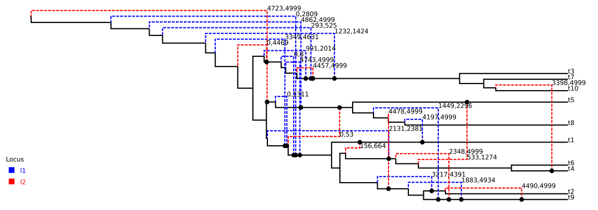
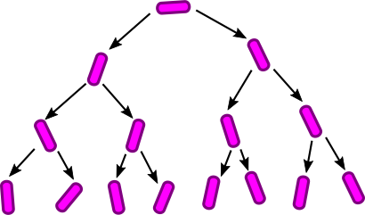
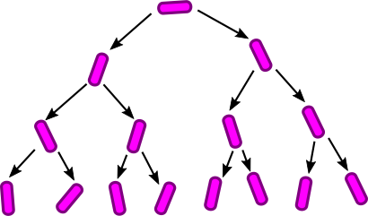
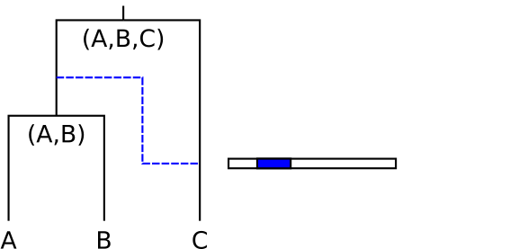
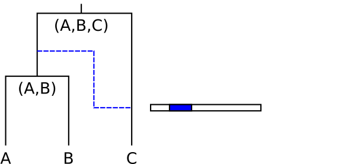

Phylogenetic Treatment of Recombination
With a particular focus on Bacterial Recombination
cEvo group, D-BSSE, The ETH Zurich
Taming the BEAST, 22nd June, 2018

Ignoring recombination when present:
| Pros | Cons |
|---|---|
|
|
| Pros | Cons |
|---|---|
|
|
For fixed recombination rate $\rho=r/g$ in the limit $r\ll 1$, $g\ll 1$ and $N\gg 1$, the genealogical process is the coalescent with recombination (Hudson, 1983):
A gene conversion event refers to the replacement of a single contiguous stretch of sequence with a homologous stretch from a different parent. Incorporated into a modified CwR process by Wiuf and Hein (2000).
Can easily write down an expression for the posterior distribution for the ARG given an alignment:
$$P(G,\rho,N,\mu|A) = \frac{1}{P(A)}P(A|G,\mu)P(G|\rho,N)P(\rho,N,\mu)$$
In practice, this is non-trivial since:
Despite this, many approximate algorithms exist.
For many bacteria, the ratio between the recombination rate and the mutation rate is extremely high.
| Parameters | |
|---|---|
| $1/N(t)$ | Coalescence rate |
| $\rho_s$ | Recombination rate |
| $\delta$ | Expected tract length |
Inference follows the standard Bayesian phylogenetic tradition:
\begin{equation*} f(G,N,\mu,\rho,\delta|A) \propto P_{F}(A|G,\mu)f_{CGC}(G|N,\rho,\delta)f_{\text{prior}}(N ,\mu,\rho,\delta) \end{equation*}where
The genealogy density under ClonalOrigin model can be expanded
\begin{equation*} f_{CGC}(G|\rho',\delta,N)=\left(\prod_{i=1}^M f(C_i|T,N,\delta)\right)P(M|T,\rho)f_C(T|N) \end{equation*}Despite using a simplified model, an infinite number of ARGs still possess the same likelihood given a sequence alignment.
Very important for an MCMC algorithm to propose state changes which minimize effect on likelihood.
One should always test that a new sampler exactly converges to a known distribution: this provides a strict necessary criterion for correctness.
True ARG:
Randomly-selected ARG from MCMC:
True ARG:
Summary ARG from MCMC:


 



 
